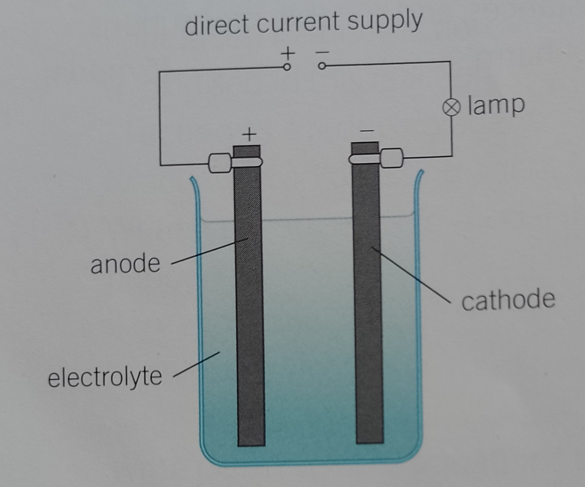

Reactivity series

Setup

Note
Electrolysis only works where there are compounds with elements that form ions of opposite charge
Electrolyte
- Electrolyte must be a liquid, that is because it needs to conduct electricity
- Ionic compounds can be dissolved in water, where the ions are free to move around to carry charge (conduct electricity)
- They can also be melted so the ionic bonds are broken and there will just be ions floating around
Electrodes
- Electrodes are usually made of metal or graphite that are unreactive (inert)
- Anode: positive
- Cathode: negative
Reactivity series
More notes
- Hydrogen(H) forms a positive ion
- Hydroxide(OH) forms a negative ion
- If the element is from group 7 (Br, I, Cl, etc), it will always have pirority over the other elements when at electrodes
- Gases are always in twos (H₂, O₂, etc)
4OH -> 2H₂O + O₂- Upside down test tubes filled with on the electrolyte (liquid) can be used to collect gases